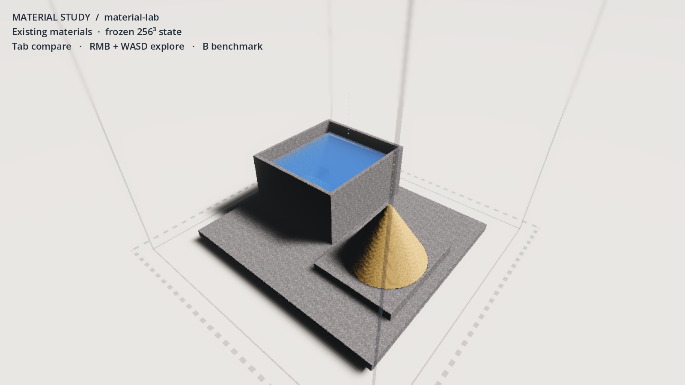
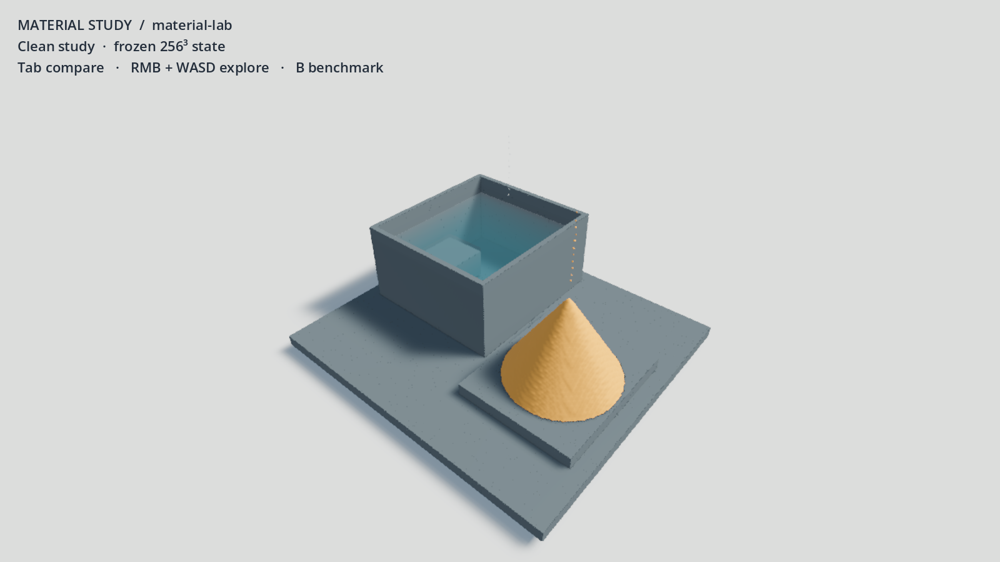
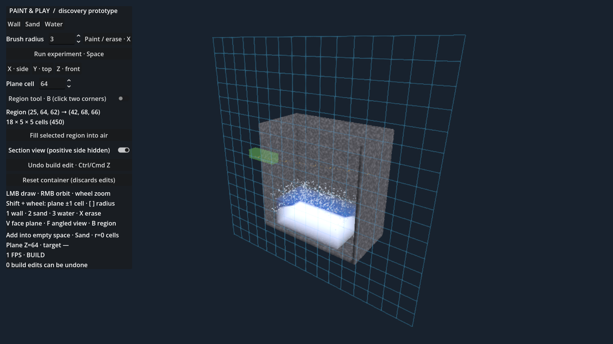

14 September 2026 · Three-agent discovery
A better painting foundation.
A physics model still to resolve.
Keep the useful GPU infrastructure. Establish explicit editing, state and time boundaries before choosing the permanent simulation backend. WorldPainter supplies the paint-first interaction direction; precise authoring remains available underneath.
Read the recommendation · Original audit
16–18%Lower painting frame time in the controlled coalescing experiment. Averaged means: 25.81 → 21.46 ms.
Tick grouping mattersThe same 60 ticks produce different physical state with air enabled. This defect remains to be fixed.
Paint, run, restoreA real GPU editor prototype demonstrates exact placement, protected walls, construction undo and live edits.
Appearance comparison
The cleaner treatment tests readability. It is not final art direction and did not demonstrate a speedup. Geometry, camera and voxel state are matched; the water and spray are frozen authored state.
Existing materialsClean diagnostic


Dark speckles, grid-scale surface ripples and foliage noise remain. A shader cannot supply missing fluid momentum. Method, timing and limitations
Editing behavior, still rough presentation

Automated acceptance capture. The displayed FPS includes test readbacks and CPU assertions; it is not an editor performance measurement. Panels and material appearance remain unfinished.
Use material + brush + Run as the main loop. Precise planes and regions are useful optional tools. Surface-following paint, timed stationary emission, persistent saves, redo and production delta undo remain outstanding.
The runnable prototype and controls are in the interaction report. It uses the production GPU backend; the separate appearance and coalescing experiments are not automatically applied to it.
What passed together
| Combined branch validation | Result |
|---|
| Existing CPU / interaction geometry and time | 37 + 20 checks passed |
| Existing GPU128 / interaction acceptance | 74 + 19 checks passed |
| Shorter 256³ deterministic coalescing replay | All 10 voxel/air equivalence pairs passed |
| Frozen renderer integration rerun | 8 phases, 2 unchanged-state hashes |
Independent verification and caveats · Physical model and scaling analysis